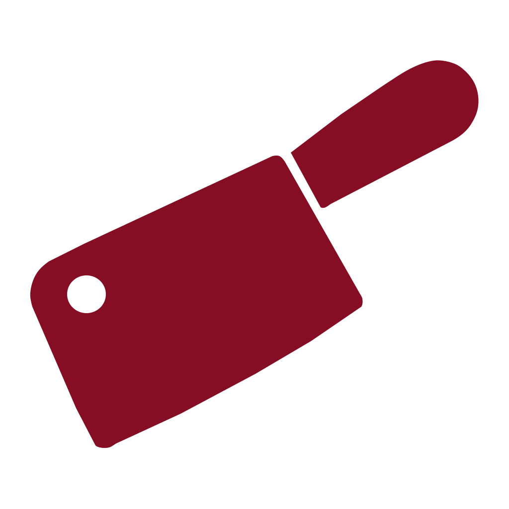

WHOLESALE MEAT TRADING
CutLink
Connecting suppliers and butchers.
Opening your workspace…
Your workspace has not finished opening. Check your connection and try again.

WHOLESALE MEAT TRADING
Connecting suppliers and butchers.
Opening your workspace…
Your workspace has not finished opening. Check your connection and try again.